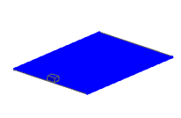
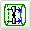
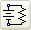
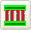

You can account for the motion of a parts in your assembly, such as solar panels, antennas, robotic systems, and optical platforms, in your thermal model to provide an accurate picture of the heating cycles.
Use an Articulation simulation object to model the transient thermal effects of the movement of selected elements in the model. The thermal solver uses the displacements of the articulation sequence to calculate:
Time-varying radiative conductances
View factors at each location
Heat loads (including radiative and solar heating)
Varying conductances of thermal couplings
Shadowing of elements
To define the movement of the selected elements in your model, you use an Articulation simulation object in conjunction with:
A Joint type modeling object to model the translation or rotation of the moving elements.
A Joint-Orbital Tracker type modeling object to link the rotation of the moving elements to defined orbits.
Options in the Articulation Parameters group on the Transient Setup tab of the Solution dialog box let you control the start and end times for the articulation as well as the calculation interval. You can also choose to match the orbital start and end times and calculation interval that you may have previously defined.
You can view an animated display or the articulating motion in post-processing. The animated model accurately displays all the rotations and translations of its articulated parts, including compound articulations.

|
Boundary condition |
Description |
|
Duct Flow Boundary Conditions  |
Lets you model duct flow networks such as pipes and HVAC systems. |
|
Joule Heating  |
Lets you model the heating generated due in an electrical circuit defining a currents and voltages. |
|
Peltier Cooler  |
Lets you model the effect of a thermo electrical cooler generated by a current or a voltage. |